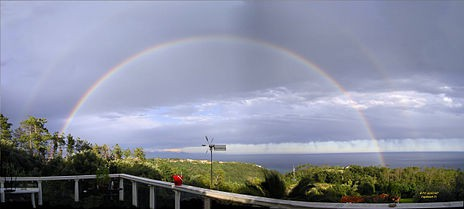

Torna alla home page
L'arcobaleno e' un fenomeno ottico e meteorologico che produce uno spettro quasi continuo di luce nel cielo quando la luce del Sole attraversa le gocce d'acqua rimaste in sospensione dopo un temporale, o presso una cascata o una fontana.
Visivamente e' un arco multicolore, rosso sull'esterno e viola sulla parte interna, senza transizioni nette tra un colore e l'altro.

Un arcobaleno non e' qualcosa di concreto che abbia esistenza effettiva in una particolare posizione del cielo. Si tratta solo di un fenomeno ottico la cui posizione apparente dipende dal punto in cui si trova l'osservatore e dalla posizione del sole.
|
Torna alla home page |